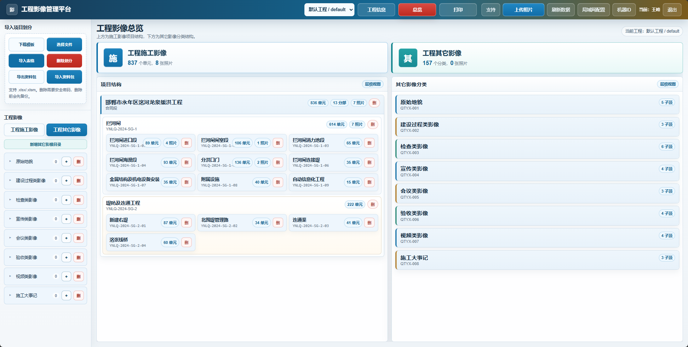
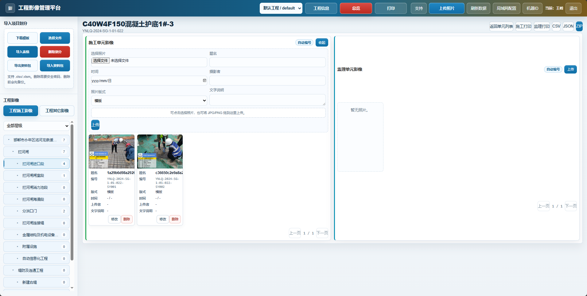
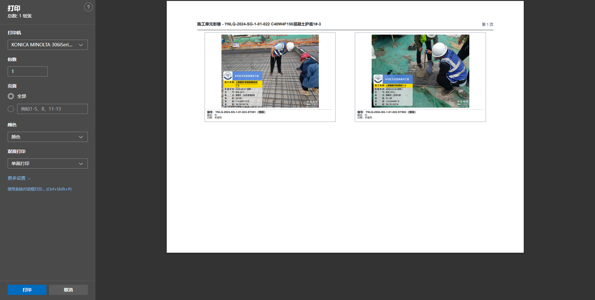

产品介绍
四大专业，同一套影像工具
桌面端负责工程结构、编号、打印和导出。小程序负责现场水印拍照和同步。工程要绑定到云账号，小程序才能看到，而且不能换到别的账号。
01 · 水利
水利工程影像
河道、闸室、泵站按合同、单位、分部、单元挂接。施工和监理影像分开留存，隐蔽节点可以再找回来。
- 拦河闸、堤防、连通工程等单元目录
- 浇筑、模板、检测等工序的题名和编号
- 现场水印可以写项目、部位、时间和地点
- 单元内打印；会员可以跨单元批量打印

水利现场与桌面归档
02 · 房建
房屋建筑影像
主体和机电按分部工程归集。单元里可以再分工序。对不上的照片先放进待分类，核对后再入库。
- 单位工程、分部工程、单元工程目录
- 施工和监理分开
- 题名、拍摄者、日期可以改，也可以查
- 勾选打印，或导出压缩包交付

房建现场取证与单元结构
03 · 市政
市政工程影像
道路、桥梁、管网按部位归档。施工和监理分层，适合一条线上有很多点位的工程。
- 按关键字搜索部位
- 影像库里按网格查看
- 文件夹导入时，用水印给出候选单元
- 当前图库或勾选照片打印；批量打印需会员

市政道路、桥梁和管网
04 · 电力
电力工程影像
电缆、光伏等隐蔽节点一次拍清。每个工程有自己的编号规则，换工程时照片和设置不会串到一起。
- 施工单元、施工工序、监理单元、监理工序分开编号
- 删除照片或工程时要输入这个工程的删除密码
- 打印方案可以保存下来下次再用
- 统计表和工程资料包可以导出

电力隐蔽工程与打印交付
界面一览



准备建立第一个工程
下载 Windows 安装程序后，按使用说明从注册和项目划分开始。